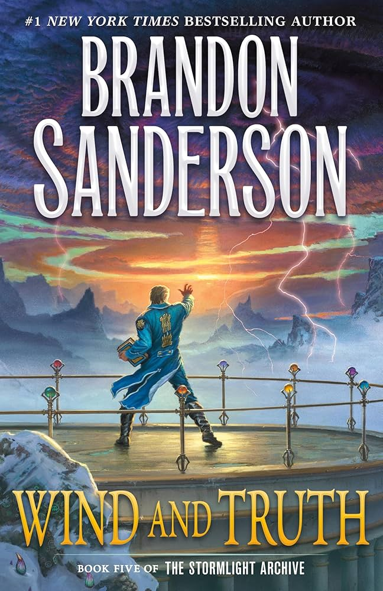
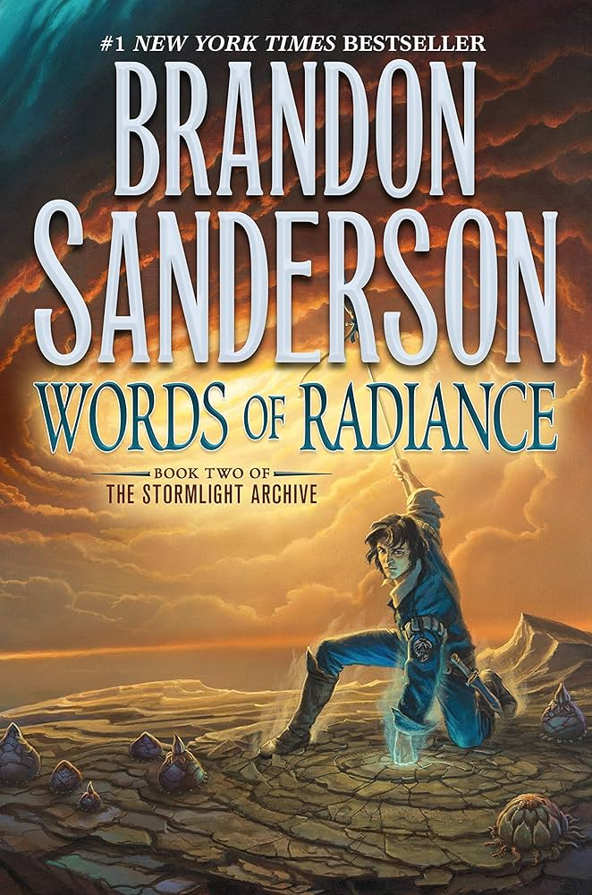

Wind and Truth: Book Five of the Stormlight Archive (The Stormlight Archive, 5)
Dalinar Kholin challenged the evil god Odium to a contest of champions with the future of Roshar on the line. The Knights Radiant have only ten days to prepare―and the sudden ascension of the crafty and ruthless Taravangian to take Odium’s place has thrown everything into disarray. Read More...
Words of Radiance: Book Two of the Stormlight Archive (The Stormlight Archive, 2)
Expected by his enemies to die the miserable death of a military slave, Kaladin survived to be given command of the royal bodyguards, a controversial first for a low-status "darkeyes." Now he must protect the king and Dalinar from every common peril as well as the distinctly uncommon threat of the Assassin, all while secretly struggling to master remarkable new powers that are somehow linked to his honorspren, Syl. Read More...
Filters will go here